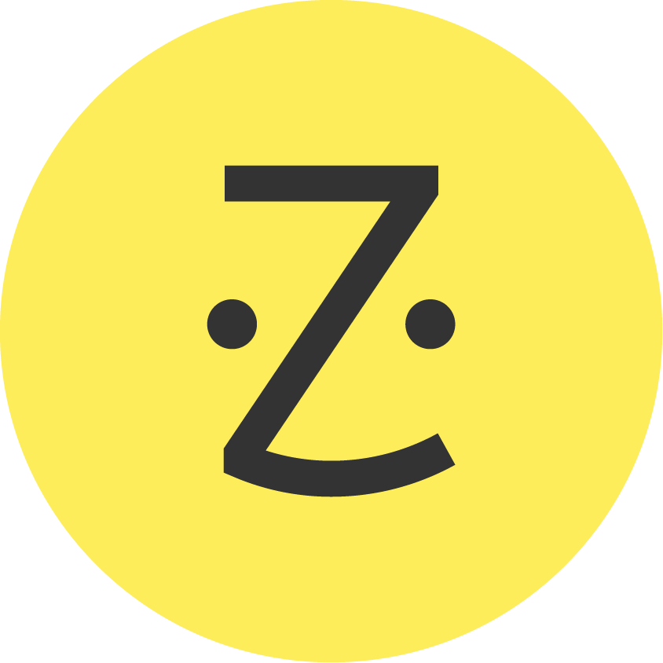

<div class="min-h-screen">
  <!-- Sidebar -->
  <!-- i use the bg image and rotate column -->
  <aside
    class="fixed inset-y-0 left-0 w-64 bg-gradient-to-t from-yellow-200 to-yellow-100 text-white transition-transform duration-300"
    [class.translate-x-0]="isSidebarOpen"
    [class.-translate-x-full]="!isSidebarOpen"
  >
    <!-- Logo -->
    <div class="p-4 border-b border-gray-600 my-2 text-gray-700">
      <div class="flex items-center space-x-2">
        
        <span class="text-xl font-bold">Zocdoc</span>
      </div>
    </div>

    <!-- Navigation -->
    <nav class="p-4 space-y-2 text-gray-900">
      <a
        routerLink="/admin/dashboard"
        routerLinkActive="bg-primary-400"
        class="flex items-center space-x-3 px-4 py-3 rounded-lg hover:bg-[#fce969] transition-colors"
      >
        <svg
          class="w-6 h-6 text-gray-600"
          fill="currentColor"
          viewBox="0 0 24 24"
        >
          <path d="M10 20v-6h4v6h5v-8h3L12 3 2 12h3v8z" />
        </svg>
        <span>Dashboard</span>
      </a>

      <a
        routerLink="/admin/users"
        routerLinkActive="bg-primary-400"
        class="flex items-center space-x-3 px-4 py-3 rounded-lg hover:bg-[#fce969] transition-colors"
      >
        <svg
          class="w-6 h-6 text-gray-600"
          fill="currentColor"
          viewBox="0 0 24 24"
        >
          <path
            d="M16 11c1.66 0 2.99-1.34 2.99-3S17.66 5 16 5c-1.66 0-3 1.34-3 3s1.34 3 3 3zm-8 0c1.66 0 2.99-1.34 2.99-3S9.66 5 8 5C6.34 5 5 6.34 5 8s1.34 3 3 3zm0 2c-2.33 0-7 1.17-7 3.5V19h14v-2.5c0-2.33-4.67-3.5-7-3.5zm8 0c-.29 0-.62.02-.97.05 1.16.84 1.97 1.97 1.97 3.45V19h6v-2.5c0-2.33-4.67-3.5-7-3.5z"
          />
        </svg>
        <span>Users</span>
      </a>

      <a
        routerLink="/admin/report"
        routerLinkActive="bg-primary-400"
        class="flex items-center space-x-3 px-4 py-3 rounded-lg hover:bg-[#fce969] transition-colors"
      >
        <svg
          class="w-6 h-6 text-gray-600"
          fill="currentColor"
          viewBox="0 0 24 24"
        >
          <path
            d="M20 4H4c-1.1 0-1.99.9-1.99 2L2 18c0 1.1.9 2 2 2h16c1.1 0 2-.9 2-2V6c0-1.1-.9-2-2-2zm-5 14H9v-6h6v6zm5-7h-2v-2h2v2zm0-4h-2v-2h2v2z"
          />
        </svg>
        <span>Report</span>
      </a>

      <a
        routerLink="/admin/settings"
        routerLinkActive="bg-primary-400"
        class="flex items-center space-x-3 px-4 py-3 rounded-lg hover:bg-[#fce969] transition-colors"
      >
        <svg
          class="w-6 h-6 text-gray-600"
          fill="currentColor"
          viewBox="0 0 24 24"
        >
          <path
            d="M19.43 12.98c.04-.32.07-.64.07-.98s-.03-.66-.07-.98l2.11-1.65c.19-.15.24-.42.12-.64l-2-3.46c-.12-.22-.39-.3-.61-.22l-2.49 1c-.52-.4-1.08-.73-1.69-.98l-.38-2.65C14.46 2.18 14.25 2 14 2h-4c-.25 0-.46.18-.49.42l-.38 2.65c-.61.25-1.17.59-1.69.98l-2.49-1c-.23-.09-.49 0-.61.22l-2 3.46c-.13.22-.07.49.12.64l2.11 1.65c-.04.32-.07.65-.07.98s.03.66.07.98l-2.11 1.65c-.19.15-.24.42-.12.64l2 3.46c.12.22.39.3.61.22l2.49-1c.52.4 1.08.73 1.69.98l.38 2.65c.03.24.24.42.49.42h4c.25 0 .46-.18.49-.42l.38-2.65c.61-.25 1.17-.59 1.69-.98l2.49 1c.23.09.49 0 .61-.22l2-3.46c.12-.22.07-.49-.12-.64l-2.11-1.65zM12 15.5c-1.93 0-3.5-1.57-3.5-3.5s1.57-3.5 3.5-3.5 3.5 1.57 3.5 3.5-1.57 3.5-3.5 3.5z"
          />
        </svg>
        <span>Settings</span>
      </a>
    </nav>
  </aside>

  <!-- Main Content -->
  <div class="ml-64 min-h-screen">
    <!-- Top Navigation -->
    <header class="bg-gradient-to-r from-yellow-100 to-yellow-200 shadow-sm">
      <div class="flex items-center justify-between px-6 py-4">
        <button (click)="toggleSidebar()" class="lg:hidden">
          <i class="fas fa-bars text-xl"></i>
        </button>

        <!-- Search -->
        <div class="hidden md:flex flex-1 max-w-xl mx-6">
          <div class="relative w-full">
            <input
              type="text"
              placeholder="Search..."
              class="w-full pl-10 pr-4 py-2 rounded-lg border border-gray-800 bg-transparent hover:bg-gray-100 focus:border-primary-400 focus:outline-none"
            />
            <i
              class="fas fa-search absolute left-3 top-1/2 -translate-y-1/2 text-gray-400"
            ></i>
          </div>
        </div>

        <!-- User Menu -->
        <div class="flex items-center space-x-4">
          <button class="relative">
            <svg
              class="h-6 w-4"
              viewBox="0 0 24 24"
              fill="none"
              stroke="currentColor"
              stroke-width="2"
              stroke-linecap="round"
              stroke-linejoin="round"
            >
              <path d="M18 8A6 6 0 0 0 6 8c0 7-3 9-3 9h18s-3-2-3-9" />
              <path d="M13.73 21a2 2 0 0 1-3.46 0" />
            </svg>
            <span
              class="absolute -top-1 -right-1 w-4 h-4 bg-red-500 text-white text-xs rounded-full flex items-center justify-center"
            >
              3
            </span>
          </button>

          <div class="relative" #userMenu>
            <button
              (click)="toggleUserMenu()"
              class="flex items-center space-x-2"
            >
              
              <span class="hidden md:inline">Yared</span>
              <i class="fas fa-chevron-down text-sm"></i>
            </button>

            <!-- Dropdown Menu -->
            <div
              *ngIf="isUserMenuOpen"
              class="absolute right-0 mt-2 w-48 bg-white rounded-lg shadow-lg py-2"
            >
              <a href="#" class="block px-4 py-2 hover:bg-gray-100">
                <i class="fas fa-user mr-2"></i>Profile
              </a>
              <a href="#" class="block px-4 py-2 hover:bg-gray-100">
                <i class="fas fa-cog mr-2"></i>Settings
              </a>
              <div class="border-t border-gray-100 my-2"></div>
              <button
                (click)="logout()"
                class="block w-full text-left px-4 py-2 hover:bg-gray-100 text-red-600"
              >
                <i class="fas fa-sign-out-alt mr-2"></i>Logout
              </button>
            </div>
          </div>
        </div>
      </div>
    </header>

    <!-- Page Content -->
    <main class="p-6">
      <router-outlet></router-outlet>
    </main>
  </div>
</div>
